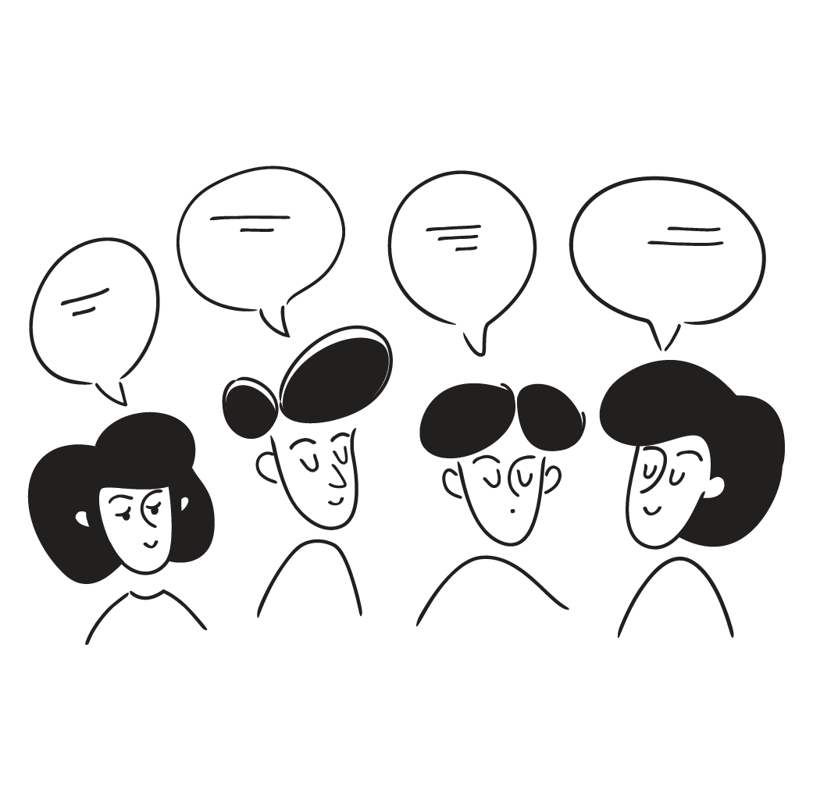

![]()
05:00
ビブリオバトル入門《2025》
#6 研究分野と（少し）外れた本を紹介しよう①
November 12, 2025
Ⅰ. 授業の感想
授業の感想
今回の授業では、前回の反省を生かし「コンパクトシティ」という専門的な用語をかみ砕いて説明することができたが、自分の紹介する本に対して興味を持ってもらうことができなかった。研究分野に関する本は特に興味を持ってもらうことが難しいのかと思った。興味を持ってもらうことが難しい状況の中で話し方や構成が重要になってくると思う（八田さん）。
今は専門分野が決まっていない分、逆に視野が広い時期なのかなと思いました。専門が決まっていけばいくほどどんどん分野が狭くなっていき、視野が狭くなっていきそうなので、いろんなことに興味を持てる今のうちに、他の方の発表を聞いて読みたくなった本を読んでおこうと思いました。専門が決まったとしても、多岐にわたる分野に興味を持ち、自分の専門に結びつけて学問を深めていける人になりたいと、今回の発*表を聞いて改めて考えました（坂田さん）。
授業の感想
前回よりも話したいことを選んでまとまった発表になったと思う。クラスの前で発表させてもらったが、視線の移し方や時間の感覚など慣れなくてうまくいかない点が多くあった。自分から人前に立つ機会を増やしていきたいと感じた。グループの中での議論も活発に行われていて、楽しさを感じるようになってきた。質問するのが得意でないから、これからは盛り上げるためにも発言を増やしていこうと思う（梅野さん）。
普段自分では人文系の本や小説しか読まないので、プログラミングや医療、経済などいろいろな書籍に触れられて好奇心が擽られました。普段のGSクラスだとほかの学生が普段どんな分野を学んで何に関心があるのか知る機会が少なくて、みんな一人一人に世界があるんだなと実感した気分です。次回は専攻と違う分野なので、今回聞いた話も参考にしつつ選んでみたいです（上田さん）。
授業の感想
今回の授業も前回と同じく、自分の専門に関する本を紹介する内容でした、皆の発表を聞きながら、得意分野になると人はこんなに表情や声が変わるのかと感じました。必ずしも読破していなくても、自分の知識を使って内容を補い、自分なりの視点で語ろうこともあります。こうした雰囲気の中で学ぶことで、自分も専門を軸にした伝え方を磨き、もっと学び続けたいと感じます（谷さん）。
今日の授業では全体発表の際に司会をやる機会がありそこでいくつか学んだことがあった。例えば、発表者が話し終わった後の質疑応答の時になかなか質問が出にくい雰囲気があると思うが、そういった時にその雰囲気を和ませるような質問を自分からできるようになると司会がうまくなるのかなと考えた。また、発表者を持ち上げられるような場を作るのも大切なのかもしれないと思った（デルガードさん）。
授業の感想
今回初めて、自分が紹介する本をすでに読んだことのある人が同じ班にいて、自分の紹介が見当違いなことを言っていないか少し緊張した。また、自分と同じ学類の人が紹介する本はやはり自分の興味のあるものなので非常に面白そうな本ばかりだと思った。また、今までの別々に選んだ2冊の本が両方東野圭吾の本であったことに気がつき、そこで初めて自分が東野圭吾が好きだということに気がついた（畑井さん）。
授業に向けて読んだ本という人が多かったが、それでも研究分野の本だと身が入ったり、話せることが多かったように感じた。どんなラインナップから選んだかはわからないが、紹介者の専門分野に対する意識が選んだ本に表れるような気がした。まだ専門の勉強が始まってないので、限られた話しかできないが、専門外の人に紹介するには今がちょうどいい知識量ぐらいだったと感じた（土山さん）。
Ⅱ. グループワーク：研究分野と（少し）外れた本を紹介しよう①
授業の約束（教員との約束）
この授業はグループワーク中心の授業です。教員一人では授業を作ることができません
- 教員：学びの空間設計者
- 受講生：コンテンツ制作者
皆さんも授業を作るメンバーとして、以下の3つを心がけて下さい
- 元気に毎回出席する（ただし無理は禁物）
- グループワークには積極的に参加する
- 提出物はちゃんと出す

グループワークの心理的安全性
重要 | 「この場では安心して意見を言える」という感覚が何より大切です
- グループワークで話したことは外に持ち出さない
- 相手の意見を批判しない（マウンティング行為を含む）
- グルームのメンバー全員が「つながり」を生む声かけを心がける（「◯◯さんはどう思いますか？」）
グループワークの心理的安全性
禁止 | マウンティング行為
- 知識ひけらかし型：「この本は原著で読んでるから、翻訳はちょっとね」/ 「作者の別の論文を読んでないと本当の意味は分からないよ」
- 先取り型：「あー、この後の展開は◯◯だから、そこまで読まないと面白さはわからないよ」/「私、もう続編も全部読んでるから」
- 比較優位型：「その感想は初心者っぽいね」 / 「自分はもっと難しい本を普段読んでるから、この本は物足りないかな」
- 発言の矮小化型：「その見方は浅いよ、本当はこう読むべきなんだ」 / 「その感想はよくあるけど、重要なのは別のところだよ」 / 「それってあなたの感想ですよね」
ビブリオバトル：研究分野と（少し）外れた本を紹介しよう②
ビブリオバトル：研究分野と（少し）外れた本を紹介しよう②
司会（タイムキーパー）：ダイヤ♦︎️️︎️
本の紹介：5分（最低4分30秒は話すこと）
質疑応答：3分（しっかり3分間、質疑応答すること）
アフターセッション：5分（しっかり5分間話し合うこと）
- グループチャンプ本を決めて下さい
- 配布するカードに、
- 日付
- グループチャンプ本のタイトル
- 受講生の名前
- 選出理由を書いて提出して下さい
- 残りの時間は、ブックカードのまとめ方、質疑応答の続きなど、各グループで有効に活用して下さい
Ⅲ. グループチャンプ本プレゼンテーション
グループチャンプ本プレゼンテーション
- 本の紹介：5分
- 最低4分30秒
- 質疑応答：3分
プレゼンテーションシート
- 最終授業日に「クラスチャンプ本」を投票で決めます
- 簡単なメモをプレゼンテーションシート書きましょう（回収しません）
00:30
Ⅳ. 学期末振り返りレポート
学期末振り返りレポート
課題
本の選択と紹介について、あなたが工夫したことや努力したことを、具体例を交えながら、600字から800字で説明して下さい。
この授業を通して、あなたの興味関心はどのように広がりましたか。具体的を交えながら、600字から800字で説明して下さい。
体裁
- タイトル、学籍番号、氏名を記した一般的なレポート形式に沿っていれば、どのような形式でも構いません。字下げ、段落などにも気をつけて下さい。
学期末振り返りレポート
振り返りレポートとは
- Reflective Writingについての英語圏の位置付け
- 英語圏においては、アカデミックレポートや単なるエッセイとは明確に区別された役割が与えられています
学期末振り返りレポート：The University of Reading（1/2）
リフレクティブ・ライティング（振り返りを書くこと）では、自分が経験した出来事について探究し、説明することが求められます。このライティングは、他のアカデミック・ライティングよりもとりわけ難しく、また、取り組みがいがある（challenging）と感じるかもしれません。というのは、成功したことだけでなく、自分の不安や失敗についても考え、書く必要があるからです。できるだけ、〔題材とする〕状況の際に抱いた感情から離れて、客観的に考えるようにしましょう。たとえ自分の経験や気持ちについて書く場合でも、他の課題と同じように、厳格かつ徹底的でなければなりません。
授業で出題されたガイドラインに従いましょう。文字数の制限がある場合も多いので、なんでも書くのではなく、あなたの考察を一番よく説明できる例を選んで書くようにしましょう。また、評価の多くは「出来事の説明」よりも「そこから得た気づき（洞察）」で決まることがほとんどであることを覚えておいて下さい。ですので、出来事の説明は短く、要点を絞ることが大切です。
学期末振り返りレポート：The University of Reading（2/2）
3）題材の選び方 振り返りのプロセスをもっともよく表す、適切な例を特定しましょう。そのなかでも、特に難しかったことや、当惑した出来事を幾つかか取り上げてみましょう。そして、なぜその出来事が印象に残ったのか、そこから自分が何を学んだのかを考えて書くようにしましょう。
- 出典：The University of Reading, https://libguides.reading.ac.uk/reflective/writing
学期末振り返りレポート：UNSW
振り返りレポートを書くことで、学習の旅に関連するあらゆることについて、振り返り、正しく理解することができます。具体的には
- コース内で得た経験、考え、観察
- あなたが発見した興味深かったこと、混乱したこと、刺激を受けたこと
- コースのトピックに対する別の解釈や異なる視点
- 新たなアイデア、可能性、推測、解決策
- 問題の解決方法や理解に至った過程
- あなたが学んだことと経験のあいだの結び付き
- 出典：UNSW（ニューサウスウェールズ大学）Reflective writing: Learn how to write reflectively with various examples and tips
学期末振り返りレポート
評価基準
提出先と締め切り
- 提出先：Googleフォーム
- 締め切り：2025年12月1日（月）23時59分
- ファイル名は、氏名を「かな表記」＋レポートにして下さい
- できればpdfで提出してほしいですが、無理な場合は、Wordファイルも可とします
- 例：かりやちひろ_レポート.pdf
- 例：かりやちひろ_レポート.docx
Ⅳ. 次回の授業と宿題
次回の授業と宿題
次回
- 研究分野と（少し）外れた本を紹介しよう② 第2ラウンド
宿題
- 授業の感想
- 締め切り：授業と同じ週の金曜日23時59分